Квадратична функція
Нехай Х – множина значень незалежної змінної, Y – множина значень залежної змінної. Функція – це правило, за допомогою якого за кожним значенням незалежної змінної з множини X можна знайти єдине значення залежної змінної із змінної Y.
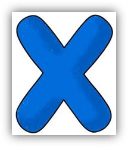
- описовою
- за допомогою формули
- за допомогою таблиці
- графічно
Найчастіше функцію задають за допомогою формули. Такий спосіб задання фунції називають аналітичним.
Означення. Функцію, яку можна задати формулою виду \(y=ax^2+bx+c\), де \(x\) – незалежна змінна, \(a\), \(b\), \(c\) – деякі числа, причому \(a \ne 0\), називають квадратичною.
Приклад.
\(2x^2+6x+7=0\)
\(-x^2+4x-2=0\)
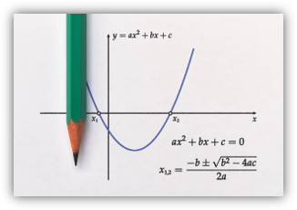
Графіком квадратичної функції є парабола, вітки якої напрямлені вгору, якщо \(a>0\) і вниз, якщо \(a<0\)
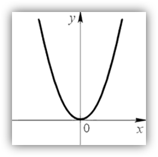
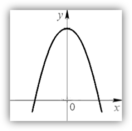
- Визначити напрямок віток параболи
- Визначити координати вершини параболи
- Визначити координати точок перетину параболи з осями координат
Приклад 1. Побудувати графік функції \(y=x^2-6x+8\)
Розв'язання
Дана функція є квадратичною. Її графіком є парабола. Знайдемо абсцису й ординату вершини параболи. Маємо:
1) \(x_0=+\frac{6}{2}=3\); \(y_0=3^2-6*3+8=9-18+8=-1\), точка \(A(3; -1)\) - вершина параболи.
2) \(a=1>0\), вітки параболи напрямлені вгору.
3) Знайдемо координати точок перетину параболи з віссю абцис. Для цього розв’яжемо рівняння:
\(x^2-6x+8=0;\)
\begin{cases}x=4\\x=2\end{cases}
\({C(4;0)}\); \({D(2;0)}\); \({B(0;8)}\)
Перетин з віссю \(O_y\): \(x=0; y=0\).
Оскільки \(x_B=3\) − вісь параболи, то доцільно знайти значення даної функції в точках \(x = 1\) і \(x = 5\) та позначити відповідні точки на координатній площині
Маємо: \({𝑓(1) = 𝑓(5) = 3}\). Сполучимо всі позначені точки плавною неперервною лінією.
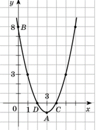
\({D(y)}\) є \(y=ax^2+bx+c\) є множина всіх
дійсних чисел. Якщо \(a>0\), \({E(y)}\) \(y=ax^2+bx+c\) є проміжок = \({[𝑦_0; +∞)}\), а якщо \(a < 0\) - проміжок \({(-∞; 𝑦_0]}\), де \(y_0\) — ордината точки, яка є вершиною параболи
Означення. Значення аргументу, при якому значення функції дорівнює нулю, називають нулем функції.
Якщо D > 0, то рівняння \(ax^2+bx+c=0\) має два різні корені, а отже, функція має два нулі й дві точки перетину з віссю абсцис.
Якщо D = 0, то рівняння \(ax^2+bx+c=0\) має один корінь, тоді функція має один нуль і вершина параболи лежить на осі абсцис.
Якщо D < 0, то рівняння \(ax^2+bx+c=0\) не має коренів, тоді нулів функція не має і парабола не перетинається з віссю абсцис.
Означення. Проміжок, на якому функція набуває значень однакового знака, називають проміжком знакосталості функції.
Нехай \(x_1\), \(x_2\) - нулі функції, тоді:
1) Якщо \(a>0\), \(D>0\), то \(y>0\) при \(x∈(-∞;x_1)∪(x_2;+∞)\); \(y<0\) при \(𝑥∈(x_1;x_2)\)
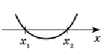
2) Якщо \(a<0\), \(D>0\), то \(y>0\) при \(x∈(x_1; x_2)\); \(y<0\) при \(𝑥∈(−∞;x_1)∪(x_2;+∞)\)

3) Якщо \(a>0\), \(D=0\), то \(y>0\) при \(x≠x_1≠x_2\)
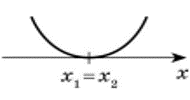
4) Якщо \(a<0\), \(D=0\), то \(y<0\) при \(x≠x_1≠x_2\)
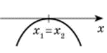
5) Якщо \(a>0\), \(D<0\), то \(y>0\) при \(x∈(-∞;+∞)\)
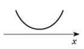
6) Якщо \(a<0\), \(D>0\), то \(y<0\) при \(x∈(-∞;+∞)\)
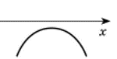
Функцію називають спадною на певному проміжку, якщо для будь-яких значень аргументу з цього проміжку більшому значенню аргументу відповідає менше. значення функції.
Функцію називають зростаючою, якщо для будь-яких значень аргументу з цього проміжку більшому значенню аргументу відповідає більше значення функції.
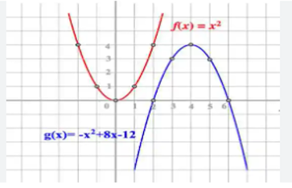
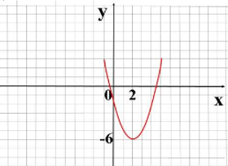
1) Задати дану функцію на графіку формулою,знаючи, що початкова була парабола \(y=x^2\).
2) Вказати назву графіка.
3) Вказати назви перетворень.
4) Вказати координати вершини.
5) Вказати область визначення та значень функції.
6) Вказати нулі функції.
7) Вказати проміжки зростання та спадання.
Метод «Мозковий штурм»
1) Функція – це...
2) Область визначення функції...
3) Область значення функції...
4) Нулі функції - це...
5) Проміжки знакосталості – це...
6) Функція називається зростаючою...
7) Функція називається спадною...
Яка функція називається квадратичною? Зобразити приклад.